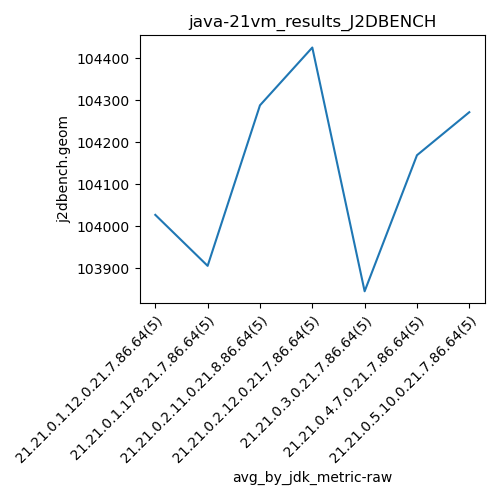

java-21 J2DBENCH
Context at bottom
/home/jvanek/git/benchmarks-in-nested-virtualisation-toolchain/final_results/vm_results/vm_results_RADARGUNs1
java-21
J2DBENCH
/home/jvanek/git/benchmarks-in-nested-virtualisation-toolchain/final_results/vm_results/vm_results_RADARGUNs3
java-21
J2DBENCH
/home/jvanek/git/benchmarks-in-nested-virtualisation-toolchain/final_results/vm_results/vm_results_DACAPO
java-21
J2DBENCH
/home/jvanek/git/benchmarks-in-nested-virtualisation-toolchain/final_results/vm_results/vm_results_J2DBENCH
java-21
J2DBENCH
vm_results_J2DBENCH
final score
Expected number of java-21 JDKs: 7
1st avgmed_alljdks_metric:
/home/jvanek/git/benchmarks-in-nested-virtualisation-toolchain/final_results/result_processing.py /home/jvanek/git/benchmarks-in-nested-virtualisation-toolchain/final_results/vm_results/vm_results_J2DBENCH j2dbench.geom False
values: [103932, 104303, 104056, 104188, 103655, 105137, 103789, 103594, 103929, 103077, 104339, 104121, 104184, 104693, 104103, 104058, 104599, 103513, 104921, 105038, 103481, 103904, 103700, 104466, 103672, 103867, 103618, 104566, 105008, 103786, 105340, 102996, 104719, 103614, 104689]
Expected number of iterations: 5
final number of values: 35 out of 35
Pass rate: 100.0%
values: (102996, 105340, 104133.0, 104058)

** accuracy from all jdks and runs
more is better
MIN: 102996
MAX: 105340
AVG: 104133.0
MED: 104058
Relative differences 1:
MIN-MAX: 2.0 %
MIN-AVG: 1.0 %
MIN-MED: 1.0 %
MAX-MIN: -2.0 %
MAX-AVG: -1.0 %
MAX-MED: -1.0 %
AVG-MED: -0.0 %
stored to java-21.properties. sort | uniq that!
2nd avgmed_by_jdk_metric:
values: [104026.8, 103905.2, 104288.0, 104425.8, 103844.6, 104169.0, 104271.6]

values: [104056, 103789, 104184, 104599, 103700, 103867, 104689]

values: (103844.6, 104425.8, 104133.0, 104169.0)
values: (103700, 104689, 104126.28571428571, 104056)

** accuracy from all jdks where runs were avged
more is better
MIN: 103844.6
MAX: 104425.8
AVG: 104133.0
MED: 104169.0
Relative differences 1:
MIN-MAX: 1.0 %
MIN-AVG: 0.0 %
MIN-MED: 0.0 %
MAX-MIN: -1.0 %
MAX-AVG: -0.0 %
MAX-MED: -0.0 %
AVG-MED: 0.0 %
stored to java-21.properties. sort | uniq that!
** accuracy from all jdks where runs were medianed
more is better
MIN: 103700
MAX: 104689
AVG: 104126.28571428571
MED: 104056
Relative differences 1:
MIN-MAX: 1.0 %
MIN-AVG: 0.0 %
MIN-MED: 0.0 %
MAX-MIN: -1.0 %
MAX-AVG: -1.0 %
MAX-MED: -1.0 %
AVG-MED: -0.0 %
stored to java-21.properties. sort | uniq that!
/home/jvanek/git/benchmarks-in-nested-virtualisation-toolchain/final_results/vm_results/vm_results_SPECJBB
java-21
J2DBENCH
/home/jvanek/git/benchmarks-in-nested-virtualisation-toolchain/final_results/vm_results/vm_results_JMH
java-21
J2DBENCH
pass rates:
vm_results_J2DBENCH=100.0%
Context:
- vm_results
- J2DBENCH